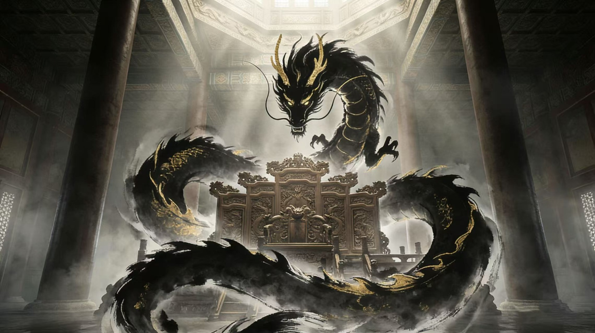

主推作品
浏览作品 ↓
青鸽剧场
《从今天起，不给婆家当提款机》
ABOUT
关于我
我是邱奕宁，江南大学视觉传达设计专业在读，希望从事 AI 视频制作、AI 短剧制作相关工作。
目前主要制作短剧剧宣切片。从目标观众和剧情出发，调整开场动作、人物情绪与台词，完成视频生成、剪辑和发布，并跟踪内容表现。
也参与喜剧短片、定制镜头和原创 AI 短剧制作。
CONTACT
联系我
545410760@qq.com ↗
AI 视频制作 / AI 短剧制作
青鸽剧场
《从今天起，不给婆家当提款机》
ABOUT
我是邱奕宁，江南大学视觉传达设计专业在读，希望从事 AI 视频制作、AI 短剧制作相关工作。
目前主要制作短剧剧宣切片。从目标观众和剧情出发，调整开场动作、人物情绪与台词，完成视频生成、剪辑和发布，并跟踪内容表现。
也参与喜剧短片、定制镜头和原创 AI 短剧制作。
CONTACT
AI 视频制作 / AI 短剧制作